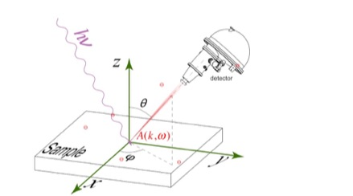
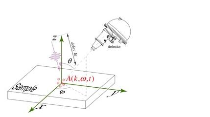
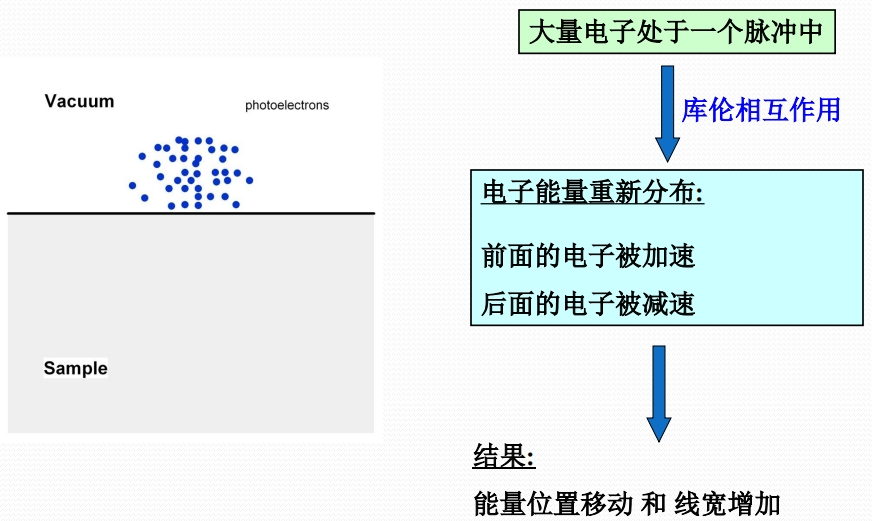

中文/EN
中文/EN研究方向
实验技术
时间分辨角分辨光电子能谱(Time-Resolved and Angle-Resolved Photoemision)
时间分辨技术是目前世界上正在兴起的研究热点，已经在对固体材料的动态结构研究中发挥了重要作用，其中最引人注目的是在超短脉冲强光场的作用下，材料中产生新的、平衡态世界中并不存在的量子现象。与化学合成探索新材料类似，可以用超短脉冲激光作用到固体材料上来探索、发现新的量子现象甚至新的但不能通过化学合成做到的非平衡态材料。固体材料由晶体格子和电子组成，但目前的时间分辨技术受限于探测手段，只能探测电子或者晶体格子的动态演化。我计划在回国后，利用自己的技术优势研制一台具有国际领先水平的时间分辨光电子能谱仪，并与上海交通大学的兆电子伏特超快电子衍射与成像系统结合起来实现对高温超导材料、奇异单层超导薄膜、拓扑绝缘材料、金属绝缘转变材料、电荷密度波材料等新型量子材料的电子结构和晶体结构全方位动态结构的探测。
 超高能量分辨角分辨光电子能谱(Ultrahigh resolved ARPES)
经过多年的发展，ARPES技术衍生出自旋分辨、时间分辨、空间分辨、高能量分辨等多种运行模式，并极大地推动了凝聚态物理及量子技术等学科的发展。尽管不同实验对表征手段有着不同的需求，但是总体来说，追求越来越高的能量分辨率一直是ARPES领域发展趋势之一。正如显微镜的终极追求是更高的空间分辨率，ARPES 这个“可以看见电子结构的显微镜”的永恒追求则是越来越高的能量和动量分辨率；而随着分辨率的提高，也带来了相应的研究突破。
本研究组在时间分辨角分辨光电子能谱仪的基础上，自行研制了一套基于KBBF非线性光学系统，光电子能谱能量分辨率达0.4 meV。该光路与时间分辨系统可随时切换测量，实现同一样品、同一解理面、相同光斑位置的时间分辨测量和高能量分辨测量。
科学研究
光诱导的超导电性
利用远红外超短脉冲光源直接泵浦晶体格子振动，有可能产生转变温度远超平衡态的临界温度甚至室温的非平衡态超导，光学泵浦探测（pump probe）实验给出了间接证据：在YBa2Cu3O6.5的超导转变温度以上观察到太赫兹光源激发铜氧八面体中顶角氧原子大幅错位引起的面间电子态的相干增强（Nature Materials 13, 705 (2014)；Nature 516, 71 (2014)）；最近的研究也发现将超短脉冲远红外光源作用在K3C60上，在200 K甚至室温下均能看到超导光学反射信号（Nature 530, 461 (2016)）。时间分辨光学研究只给出这种非平衡超导的迹象，而角分辨光电子能谱可以直接测量单粒子谱函数。用同样远红外光作用在材料上，如果能够观察准粒子寿命增长或产生超导能隙，可为光致超导提供直接证据。这也将为高温超导理论发展提供十分有效的实验支持并且为设计平衡态室温超导材料提供明确指导。此类研究目前没有开展，是受制于时间分辨光电子能谱实验中泵浦光子能量太高，从而不能共振泵浦原子振动。此类研究适用于任何超导材料，可以用来探索增强超导配对的可能性，在超导实验和理论研究中都有重大意义。
最近本研究组研究发现（Nature 595, 239 (2021)），利用超快激光，可在三维材料中诱导出奇异二维电子态，其中可能存在光致超导现象，是研究光致超导的一种新方法和新平台。
非平衡动力学
a）在对高温超导体YBCO的研究中，核磁共振实验（Wu et al., Nature 477, 191 (2011)）、X射线散射结果（Ghiringhelli et al., Science 337, 821 (2012)）表明其中存在电荷密度波（CDW），但是这种密度波从来没有在光电子能谱实验中直接观测到（CDW序的存在必然导致费米面在动量空间的复制）。利用超短超强脉冲，可以直接破坏材料中的CDW序，利用ARPES可以直接观测在光激发前后费米面的变化，为CDW序的存在提供光电子能谱的证据。b）物质的宏观特性由材料电子结构决定的，而电子与其它激发的多体相互作用。利用超短脉冲光激发材料中的某种模式，再用光电子能谱来探测平衡电子态，能为理解材料中的多体相互作用提供重要依据。c）对于铁基超导体的复杂相图，可以用超强脉冲激光pump使材料在这些物质相之间转换，利用光电子能谱仪来直接观测相应的电子态的变化，从而给出各种物质相之间的复杂联系。
光致相变
a）电子在空间周期性晶体格子中运动形成Bloch波，而电子在时间周期性电场中形成Floquet-Bloch波。在对拓扑绝缘体的研究中已经证实了固体材料中的存在这种Floquet-Bloch波（Wang et al., Science 342, 453 (2013)）。这种利用超短脉冲光操纵固体材料的方法适用于各种量子材料。b）研究（Sotjchevsak et al., Science 344, 177 (2014)）发现利用超强脉冲可以在电荷密度波材料1T-TaS2中产生新的物质相而且此物质相寿命可以长达几周，虽然这种相在平衡态世界中并不存在。利用时间分辨光电子能谱，可以用来直接观测超短脉冲激光激发过后电子结构的变化从而分析产生这种新的物质相的内在物理机制。